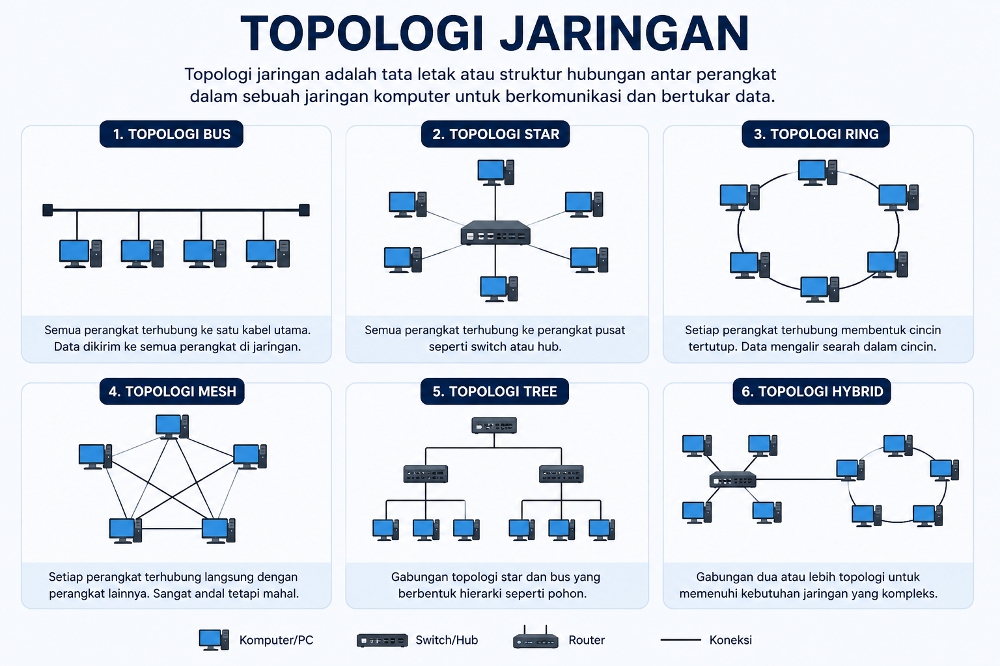

Kumpulan Tugas Informatika
Eksplorasi kode program, aplikasi sederhana, dan logika pemrosesan data komputer.
Kalkulator Web Sederhana
Aplikasi kalkulator mini yang berjalan langsung di browser. Dibuat menggunakan manipulasi DOM JavaScript untuk kalkulasi aritmatika.
Kalkulator Konversi Sistem Bilangan
Aplikasi interaktif untuk mengonversi angka antar sistem bilangan dasar komputer: Biner (Radiks 2), Desimal (Radiks 10), Oktal (Radiks 8), dan Heksadesimal (Radiks 16).
Simulator Enkripsi Kriptografi
Aplikasi penyandian teks rahasia menggunakan pergeseran Caesar Cipher interaktif. Pengguna dapat menguji enkripsi pesan dan mengubah pergeseran kunci secara real-time.
Visualizer Algoritma Bubble Sort
Simulasi visual yang mendemonstrasikan bagaimana algoritma Bubble Sort membandingkan dan menukar elemen array untuk mengurutkan kumpulan data secara menaik.
Simulator Algoritma Binary Search
Simulasi langkah demi langkah algoritma pencarian biner dengan membelah ruang pencarian menjadi setengah (Kompleksitas O(log n)).
Arsitektur & Logika Komputer
Interaksi komponen utama hardware: CPU (ALU/Control Unit), Memory (RAM), Secondary Storage, dan Bus Sistem.
Artikel : Topologi

Topologi jaringan adalah tata letak atau susunan hubungan antar perangkat dalam sebuah jaringan komputer. Topologi menentukan bagaimana komputer, server, switch, router, dan perangkat lainnya saling terhubung untuk bertukar data. Pemilihan topologi yang tepat sangat berpengaruh terhadap kecepatan komunikasi, kemudahan pengelolaan, biaya instalasi, dan keamanan jaringan. Oleh karena itu, topologi menjadi salah satu komponen penting dalam perancangan sebuah sistem jaringan.
Terdapat beberapa jenis topologi jaringan yang umum digunakan, yaitu Bus, Star, Ring, Mesh, Tree, dan Hybrid. Topologi Bus menggunakan satu kabel utama sebagai media komunikasi sehingga biaya pembuatannya relatif murah. Topologi Star menghubungkan setiap komputer ke perangkat pusat seperti switch sehingga lebih mudah dikelola. Ring membentuk jalur melingkar, sedangkan Mesh menghubungkan setiap perangkat secara langsung sehingga memiliki tingkat keandalan yang sangat tinggi. Tree dan Hybrid merupakan pengembangan dari beberapa topologi untuk memenuhi kebutuhan jaringan yang lebih besar.
Setiap jenis topologi memiliki kelebihan dan kekurangannya masing-masing. Topologi Star menjadi pilihan yang paling banyak digunakan karena mudah melakukan perawatan dan jika satu komputer mengalami kerusakan, komputer lain tetap dapat berfungsi dengan normal. Sebaliknya, Topologi Mesh menawarkan keamanan dan keandalan yang tinggi, tetapi membutuhkan biaya instalasi yang jauh lebih besar. Oleh sebab itu, pemilihan topologi harus disesuaikan dengan jumlah perangkat, anggaran, serta kebutuhan suatu organisasi atau perusahaan.
Di era digital saat ini, topologi jaringan memiliki peran yang sangat penting dalam mendukung berbagai aktivitas, seperti akses internet, pembelajaran daring, komunikasi perusahaan, hingga layanan komputasi awan (cloud computing). Dengan memahami konsep topologi jaringan, seseorang dapat merancang jaringan yang lebih efisien, stabil, mudah dikembangkan, dan mampu memberikan performa terbaik sesuai kebutuhan pengguna.
Kriptografi

Kriptografi adalah ilmu yang mempelajari teknik untuk melindungi informasi agar tidak dapat diakses oleh pihak yang tidak berhak. Dalam dunia digital, kriptografi digunakan untuk mengubah data asli (plaintext) menjadi bentuk yang tidak dapat dibaca (ciphertext) melalui proses enkripsi. Data tersebut hanya dapat dikembalikan ke bentuk semula menggunakan proses dekripsi dengan kunci yang sesuai. Teknologi ini menjadi dasar penting dalam menjaga keamanan informasi di internet.
Kriptografi digunakan pada berbagai layanan yang sering kita gunakan setiap hari, seperti aplikasi perbankan, media sosial, e-commerce, email, hingga aplikasi pesan instan seperti WhatsApp. Saat pengguna mengirim pesan atau melakukan transaksi, data akan dienkripsi sehingga tidak mudah disadap oleh pihak lain. Dengan demikian, informasi pribadi seperti kata sandi, nomor rekening, maupun data penting lainnya tetap terlindungi selama proses pengiriman.
Dalam penerapannya, kriptografi memiliki beberapa komponen penting, yaitu plaintext, ciphertext, algoritma enkripsi, dan kunci (key). Algoritma menentukan cara data diubah menjadi kode rahasia, sedangkan kunci berfungsi untuk mengunci dan membuka data tersebut. Semakin kuat algoritma dan panjang kunci yang digunakan, semakin sulit pula data tersebut diretas oleh pihak yang tidak bertanggung jawab.
Seiring berkembangnya teknologi informasi, peran kriptografi menjadi semakin penting dalam menjaga keamanan data dan privasi pengguna. Hampir seluruh sistem digital modern memanfaatkan kriptografi untuk mencegah pencurian data, pemalsuan identitas, dan penyalahgunaan informasi. Oleh karena itu, mempelajari kriptografi merupakan langkah penting bagi siswa informatika agar memahami bagaimana keamanan data diterapkan dalam kehidupan sehari-hari.
Artikel Panduan Cisco Packet Tracer

Cisco Packet Tracer adalah perangkat lunak simulasi jaringan komputer yang dikembangkan oleh Cisco Networking Academy. Aplikasi ini memungkinkan pengguna untuk merancang, membangun, dan menguji berbagai jenis topologi jaringan tanpa harus menggunakan perangkat keras seperti router, switch, maupun kabel jaringan. Karena tampilannya mudah dipahami, Cisco Packet Tracer menjadi salah satu software yang paling banyak digunakan oleh pelajar, mahasiswa, dan calon administrator jaringan.
Dengan Cisco Packet Tracer, pengguna dapat membuat simulasi jaringan sesuai kebutuhan, mulai dari jaringan sederhana hingga jaringan berskala besar. Berbagai perangkat seperti komputer, server, router, switch, access point, hingga perangkat Internet of Things (IoT) dapat ditambahkan ke dalam proyek. Pengguna juga dapat melakukan konfigurasi alamat IP, routing, VLAN, DHCP, serta berbagai layanan jaringan lainnya menggunakan antarmuka grafis maupun Command Line Interface (CLI).
Salah satu keunggulan Cisco Packet Tracer adalah kemampuannya menampilkan proses pengiriman data melalui fitur Simulation Mode. Fitur ini membantu pengguna memahami bagaimana paket data berpindah dari satu perangkat ke perangkat lainnya serta memudahkan dalam menemukan kesalahan konfigurasi. Selain itu, aplikasi ini dapat digunakan untuk berlatih sebelum menerapkan konfigurasi pada perangkat jaringan yang sebenarnya sehingga dapat mengurangi risiko kesalahan.
Cisco Packet Tracer memiliki peran penting dalam pembelajaran jaringan komputer karena memberikan pengalaman praktik yang menyerupai kondisi nyata. Dengan menggunakan aplikasi ini, siswa dapat memahami konsep dasar jaringan, melatih kemampuan konfigurasi perangkat Cisco, serta mempersiapkan diri menghadapi sertifikasi jaringan seperti CCNA. Oleh karena itu, Cisco Packet Tracer menjadi salah satu perangkat lunak yang sangat bermanfaat bagi siapa saja yang ingin mempelajari dunia jaringan komputer secara lebih mendalam.
Vibe Coding

Vibe Coding merupakan istilah yang digunakan untuk menggambarkan cara membuat program dengan bantuan kecerdasan buatan (Artificial Intelligence/AI). Pada metode ini, seorang programmer tidak selalu menulis seluruh kode secara manual, melainkan cukup menjelaskan kebutuhan atau ide dalam bahasa sehari-hari. AI kemudian akan menghasilkan potongan kode yang dapat digunakan, diperbaiki, atau dikembangkan kembali sesuai kebutuhan proyek.
Konsep Vibe Coding semakin populer sejak hadirnya berbagai AI seperti ChatGPT, GitHub Copilot, Gemini, dan Claude. Teknologi tersebut mampu membantu membuat fungsi, memperbaiki bug, menjelaskan kode yang sulit dipahami, hingga memberikan rekomendasi algoritma yang lebih efisien. Dengan demikian, proses pengembangan perangkat lunak menjadi lebih cepat sehingga programmer dapat lebih fokus pada penyelesaian masalah dibandingkan hanya mengetik kode.
Walaupun memberikan banyak keuntungan, Vibe Coding tetap memiliki tantangan. Kode yang dihasilkan AI tidak selalu benar, aman, atau sesuai dengan kebutuhan aplikasi. Oleh karena itu, seorang programmer harus memahami dasar-dasar pemrograman agar mampu memeriksa, menguji, serta memperbaiki hasil yang diberikan AI. Kemampuan berpikir logis dan memahami algoritma tetap menjadi keterampilan yang sangat penting meskipun menggunakan bantuan teknologi modern.
Di masa depan, Vibe Coding diperkirakan akan menjadi salah satu cara utama dalam mengembangkan perangkat lunak. Kolaborasi antara manusia dan AI memungkinkan terciptanya aplikasi yang lebih inovatif dalam waktu yang lebih singkat. Oleh sebab itu, pelajar informatika perlu mempelajari pemrograman sekaligus memahami cara memanfaatkan AI secara bijak, etis, dan bertanggung jawab agar teknologi tersebut benar-benar memberikan manfaat bagi masyarakat.